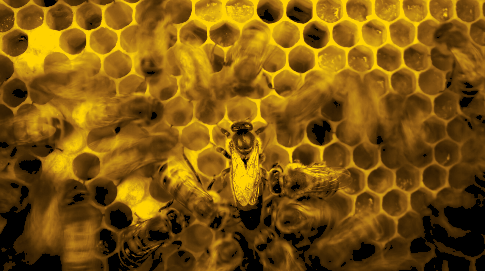
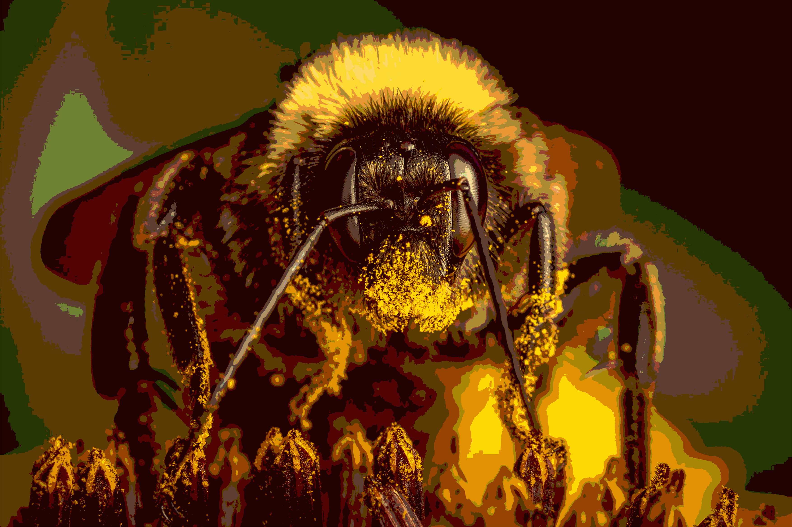
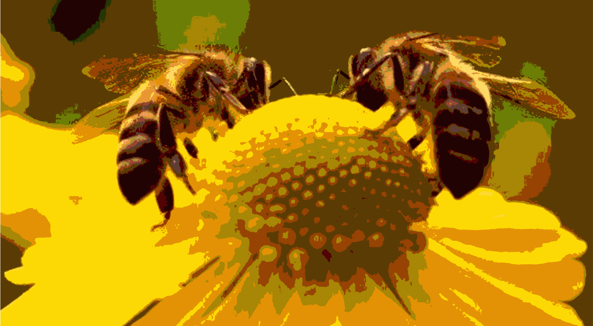
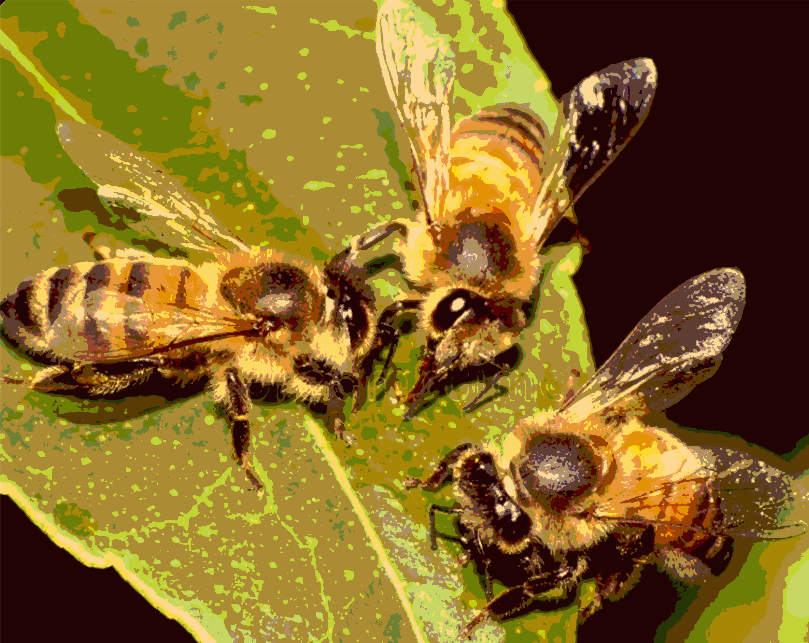
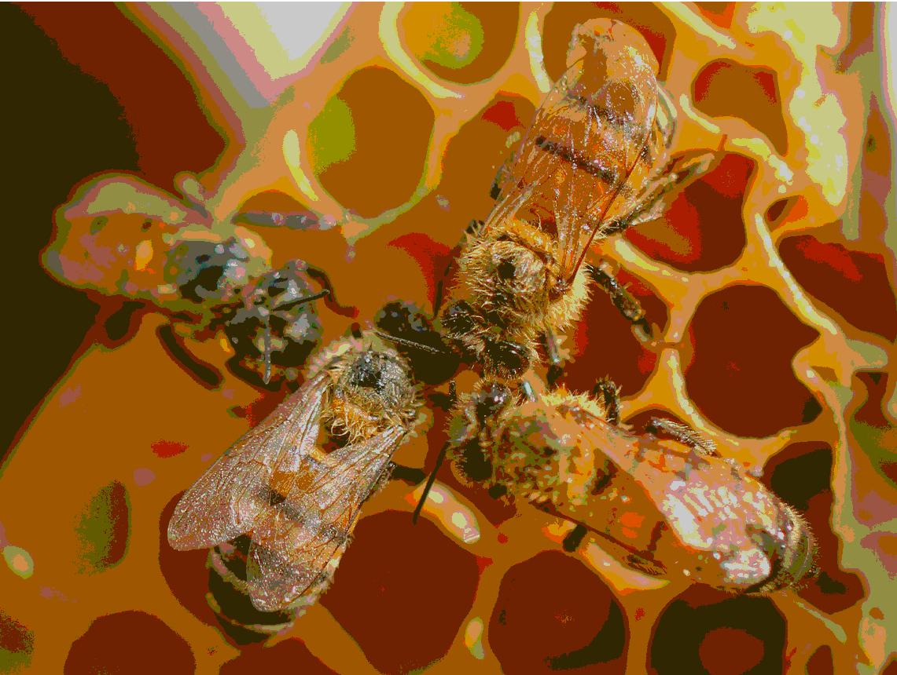
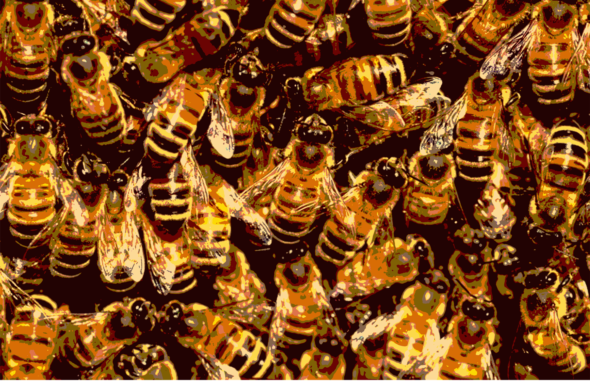

OS ZUMBIDOS DAS ABELHAS

O som característico da abelha é o zumbido (o famoso "bzzzz"), gerado principalmente pela vibração rápida de suas asas durante o
voo
ou por técnicas específicas de
polinização
BZ

BZZ

BZZZ

BZZZZ

BZZZZZZZZZZZZZ
